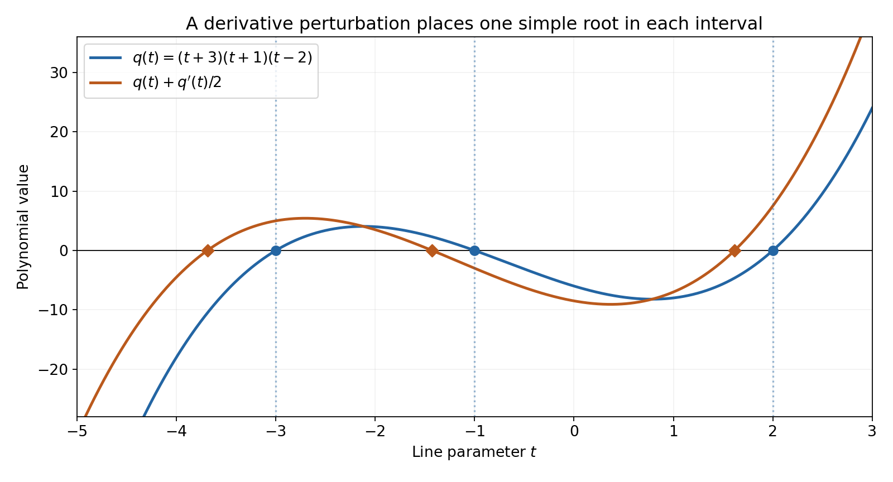
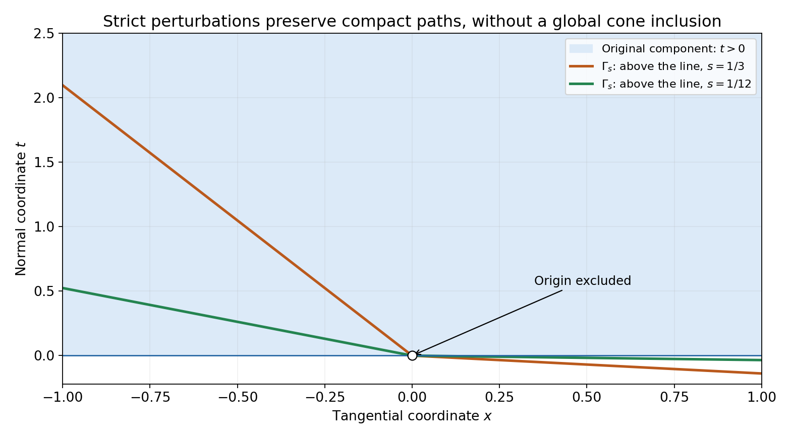

Real roots and their convex component
Written by GPT-6.1 Sol (OpenAI), October 2026. Self-checked by the writing AI. Public domain (CC0).
Real roots on parallel lines determine more than a direction for solving an equation. For a homogeneous polynomial they identify a convex region of directions, and every imaginary vector in that region gives a zero-free Fourier–Laplace tube. We explain why repeated roots do not spoil this geometry.
Read Cauchy bounds, root counts and analytic extensions for Rouché's theorem and continuous root counts. Basic references are that chapter, Nuij's paper [N] and Harvey and Lawson's account [L]. The complete proof proves every implication, including the root perturbation and the passage back to multiple roots.
1. The direction and its component
Let \(F\) be homogeneous of positive degree \(m\). Its coefficients may be complex. A real vector \(e\) is hyperbolic if \(F(e)\ne0\) and every polynomial
\[ t\longmapsto F(x+te),\qquad x\in\mathbb R^n, \tag{11} \]has only real roots. Its degree is always \(m\), because its leading coefficient is \(F(e)\).
Normalize \(p=F/F(e)\). Each polynomial \(p(x+te)\) is a product of real monic linear factors, so \(p(x)\) is real for every real \(x\). This makes every coefficient of \(p\) real. A complex overall factor therefore has no effect on the geometry.
The component containing \(e\) in \(\{F\ne0\}\) is denoted by \(\Gamma\). The hyperbolic component theorem says:
- \(\Gamma\) is open, convex and closed under positive scaling. It excludes zero for positive degree.
- Every \(v\in\Gamma\) is hyperbolic.
- For such a \(v\), a real \(x\) belongs to \(\Gamma\) exactly when every root of \(F(x+tv)\) is strictly negative.
- \(F(x+i y)\ne0\) for all real \(x\) and all \(y\in\Gamma\).
The last assertion follows immediately once directions are known: \(i\) is not a real root of \(F(x+t y)\). The work is proving that every direction in the same component remains hyperbolic.
2. Separate repeated roots, then change the direction
For a real-rooted one-variable polynomial, the operation
\[ q\longmapsto q+cq',\qquad c\in\mathbb R, \tag{12} \]preserves real roots. When \(c\ne0\), it reduces every old root multiplicity by one and inserts simple roots in the intervals between old roots. There is one further simple root on an exterior interval. Repeating the operation \(m\) times makes a degree-\(m\) polynomial have simple roots. Complete-proof Lemma 2.1 proves the precise interval count.
To apply this to a homogeneous polynomial, choose tangential linear forms \(\ell_j\) that vanish on \(e\). Form
\[ p_s=\prod_j(1+s\ell_j\partial_e)^m p, \qquad s\ne0. \tag{13} \]On an \(e\)-line every \(\ell_j\) is constant, so (13) is exactly a sequence of the operations (12). A line not parallel to \(e\) has at least one nonzero tangential coordinate, which gives simple roots. The polynomial stays homogeneous, \(p_s(e)=1\), and \(p_s\to p\) in coefficients.
Simple real roots persist for a small change of direction. To make the change uniform, use unit base points in the transverse plane and its compact sphere. Finitely many sign-changing root intervals suffice. A multiple root along any hyperbolic direction would force the gradient to vanish at that zero; complete-proof Lemma 3.1 proves this through a small real displacement and a nonreal scaled root. Strictness in \(e\) rules out such a zero gradient. Thus the hyperbolic directions in the component of \(p_s\) are both open and closed, and include the whole component.
Finally choose one compact path from \(e\) to the proposed direction \(v\) in \(\Gamma\). The original polynomial is bounded away from zero on this path. For small \(s\), the same path avoids zeros of \(p_s\), so \(v\) is hyperbolic for \(p_s\). Root continuity then makes \(v\) hyperbolic for \(p\). This is a compact-path argument; it does not require a uniform estimate over the unbounded cone.

Figure 1. The blue polynomial is \(q(t)=(t+3)(t+1)(t-2)\), with roots \(-3,-1,2\). The orange polynomial is \(q(t)+q'(t)/2=t^3+7t^2/2-3t-17/2\). Its three diamonds show numerical root locations, approximately \(-3.68857931,-1.42666426,1.61524357\). The exact roots are in \((-\infty,-3)\), \((-3,-1)\) and \((-1,2)\), respectively; there is one simple root in each interval and no other root. The graph shows polynomial values against the line parameter, rather than a solution of a differential equation. See complete-proof Lemma 2.1 and Solution 2.
3. Why the component is convex
Fix \(v\in\Gamma\). Along a path from \(v\) to another point \(x\in\Gamma\), the roots of \(F(x+tv)\) stay real. They start at \(-1\), cannot cross zero because the path avoids \(F=0\), and cannot escape to infinity because the degree and leading coefficient stay fixed. All roots are therefore negative.
The segment from \(v\) to \(x\) has
\[ F(a x+(1-a)v)=a^m F\big(x+((1-a)/a)v\big)\ne0, \qquad 0<a\le1. \tag{14} \]The parameter on the right is nonnegative and cannot be one of the negative roots. At \(a=0\), the value is \(F(v)\ne0\). The whole segment stays in the same component. This proves convexity.
Conversely, if the roots on the \(v\)-line through \(x\) are all negative, this same segment reaches \(x\) without crossing a zero. Thus it also proves the exact root test for membership. Complete-proof Theorem 4.1 includes the openness, scaling and tube arguments.
4. Four examples
Example 1: a complex coefficient factor changes no direction.
Let \((x,t)\in\mathbb R^2\), \(e=(0,1)\), and
\[ F(x,t)=e^{i\pi/5}(2t-x)(t+3x). \tag{15} \]Since \(F(e)=2e^{i\pi/5}\), normalization gives \(p=(t-x/2)(t+3x)\), with real coefficients. The roots of \(F((x,t)+z e)\) are
\[ z=-t+x/2,\qquad z=-t-3x. \tag{16} \]They are negative exactly when
\[ t>x/2,\qquad t>-3x. \tag{17} \]This open wedge is \(\Gamma\). Every point can be joined to \(e\) within it, and crossing either bounding line makes one factor vanish.
For a direction \(v=(v_x,v_t)\) in the wedge, both normal coefficients \(v_t-v_x/2\) and \(v_t+3v_x\) are positive. On any real \(v\)-line each linear factor has a real root. Also the two factors evaluated at \(w+i v\) have strictly positive imaginary parts, so neither is zero. This verifies every assertion directly for the example.
Example 2: an elliptic spatial norm gives a Lorentz cone.
Let
\[ F(x,y,t)=t^2-x^2-4y^2,\qquad e=(0,0,1). \tag{18} \]The time-line roots are \(-t\pm\sqrt{x^2+4y^2}\). Consequently
\[ \Gamma=\{t>\sqrt{x^2+4y^2}\}. \tag{19} \]The triangle inequality for the norm \(\sqrt{x^2+4y^2}\) also proves convexity directly. It follows, for example, from the usual two-dimensional Cauchy–Schwarz inequality after replacing \(y\) by \(2y\).
There is a direct check of the imaginary tube. Write spatial vectors after that replacement as \(r\), and let the imaginary vector be \((b,\tau)\), with \(\tau>|b|\). If \(F((r,t)+i(b,\tau))=0\), its imaginary and real parts give
\[ t\tau=r\cdot b,\qquad t^2-|r|^2=\tau^2-|b|^2>0. \tag{20} \]The first identity and Cauchy–Schwarz imply \(t^2\tau^2\le |r|^2|b|^2\). If \(r\ne0\), then \(t^2<|r|^2\), contrary to the second identity. If \(r=0\), then \(t=0\), again contrary to it. Thus there is no tube zero.
Example 3: three coincident roots split while the cone changes.
Start with \(p(x,t)=t^3\), \(e=(0,1)\), and tangential form \(\ell(x,t)=x\). Its component is the open halfplane \(t>0\). Put \(c=sx\). The perturbation is
\[ p_s=(1+sx\partial_t)^3t^3 =t^3+9ct^2+18c^2t+6c^3. \tag{21} \]Let \(\lambda_1<\lambda_2<\lambda_3\) be the roots of
\[ R(\lambda)=\lambda^3-9\lambda^2+18\lambda-6. \tag{22} \]Endpoint signs give exactly one root in each of \((0,1)\), \((2,3)\), \((6,7)\). These three intervals account for the degree and make all roots simple and positive. Thus
\[ p_s=\prod_{j=1}^3(t+\lambda_j sx). \tag{23} \]For \(s>0\), its component containing \(e\) is the region where all three factors are positive. Its lower boundary is
\[ t=\begin{cases} -\lambda_1 s x,&x\ge0,\\ -\lambda_3 s x,&x\le0. \end{cases} \tag{24} \]The middle factor gives no additional inequality once the two extreme factors are positive. For a fixed compact subset of \(t>0\), these components contain it for sufficiently small \(s\). The components need not contain the whole original halfplane for any one nonzero \(s\): for negative \(x\) their boundary lies above zero. Nor need they lie inside it: for positive \(x\) they extend below zero. The compact-path proof uses exactly the appropriate local assertion.

Figure 2. Blue shading is the original component \(t>0\). The orange and green boundaries use \(s=1/3\) and \(s=1/12\), respectively. Each perturbed component is strictly above its own boundary; the boundary itself is excluded. The slopes are \(-\lambda_3s\) on \(x<0\) and \(-\lambda_1s\) on \(x>0\), where \(\lambda_1\) and \(\lambda_3\) are the exact algebraic roots in (22), approximately \(0.41577456\) and \(6.28994508\). The curves show numerical samples of those exact lines. The open circle marks the excluded origin. This is a planar polynomial component, with the coordinates of Example 3; it is not a projected higher-dimensional cone. See Example 3, Solution 8 and complete-proof Theorem 4.1.
Example 4: real coefficients alone do not give a convex component.
Take \(F(x,t)=t^2+x^2\), \(e=(0,1)\). The roots on the line based at \((1,0)\) are \(\pm i\), so \(e\) is not hyperbolic. The nonzero set is the punctured plane. It is connected but not convex: it contains \(e\) and \(-e\), while their midpoint is the excluded origin. It also has an imaginary-tube zero,
\[ F((1,0)+i e)=1+i^2=0. \tag{25} \]Every coefficient is real, and \(F(e)\ne0\). The missing hypothesis is the real-root property on all real affine lines.
5. Exercises
- Basic, 10 points. Prove coefficient reality from monic real-root polynomials. Apply it to Example 1, and compute its component and the two roots explicitly.
- Intermediate, 12 points. For \(q(t)=(t+3)(t+1)(t-2)\) and \(c=1/2\), compute \(q+cq'\). Prove that it has one root left of \(-3\), one in \((-3,-1)\) and one in \((-1,2)\), with no other root.
- Intermediate, 12 points. Expand the cubic perturbation in Example 3. Verify all six endpoint values that locate the roots in (22), and derive the two boundary inequalities in (24).
- Advanced, 14 points. Prove the multiple-root gradient lemma by the scaled limit (7). Explain the choice of sign for a double root and why higher multiplicity also gives a nonreal limiting root.
- Advanced, 14 points. Give the finite-cover proof that strict hyperbolicity is open in the direction. Explain why translating and scaling transverse base points suffices, and include base points parallel to the perturbed direction.
- Intermediate, 12 points. Prove both directions of the negative-root component test and obtain convexity and the tube property. State exactly where the leading coefficient is used.
- Basic, 12 points. For \(F(x)=i x^4\) and \(e=-2\), find the normalized polynomial, its component, all hyperbolic directions and the root on a line through a real \(x\). Contrast this with the nonzero constant polynomial \(F=7i\).
- Advanced, 14 points. Justify the passage from strict perturbations to an arbitrary point in the original component. Explain why a compact path is enough, and use Example 3 to disprove either inclusion between the entire original and perturbed components for \(s>0\).
6. Complete solutions
Solution 1
For every real \(x\), normalization makes the degree-\(m\) line polynomial monic. Its factorization \(\prod_j(t-r_j)\), with real \(r_j\), has real coefficients and real constant term \(p(x)\). The imaginary coefficient polynomial vanishes on all real points, hence is zero by successively fixing coordinates and using the one-variable root bound. This proves reality without any initial reality assumption on \(F\).
In Example 1, \(F(e)=2e^{i\pi/5}\) and \(p=(t-x/2)(t+3x)\). The roots are (16). Both are negative exactly under (17). The intersection of the two open halfplanes is convex, contains \(e\), and is connected. Each factor has positive sign there. Any path from \(e\) leaving their positive intersection must meet a zero of a factor. It is therefore precisely the component of the nonzero set containing \(e\).
Solution 2
Expansion gives
\[ q=t^3+2t^2-5t-6,\qquad q+\tfrac12q'=t^3+\tfrac72t^2-3t-\tfrac{17}2. \tag{26} \]The original roots \(-3,-1,2\) are simple. Off them,
\[ \frac{q'}q=\frac1{t+3}+\frac1{t+1}+\frac1{t-2}. \tag{27} \]Its derivative is strictly negative on each complementary interval. The equation for the new roots is \(q'/q=-2\). On \((-\infty,-3)\), the left side decreases from \(0^-\) to negative infinity, so there is exactly one root. On \((-3,-1)\) and \((-1,2)\), it decreases from positive infinity to negative infinity, giving one each. On \((2,\infty)\) it is positive and gives none. At an original root, \(q+q'/2=q'/2\ne0\). These three new roots are simple, because the derivative of (27) is nonzero. Degree three leaves no other real or complex roots.
Solution 3
The binomial expansion is valid because \(\partial_t(sx)=0\). Applied to \(t^3\), its four terms are \(t^3\), \(3c(3t^2)\), \(3c^2(6t)\) and \(c^3(6)\). This gives (21). The endpoint values for (22) are
\[ R(0)=-6,\ R(1)=4,\ R(2)=2,\ R(3)=-6,\ R(6)=-6,\ R(7)=22. \tag{28} \]The intermediate value theorem gives one root in each indicated disjoint interval. Since the degree is three, there is exactly one in each, and they are simple. Comparing the monic coefficients gives (23): the three elementary symmetric sums are \(9,18,6\).
When \(x\ge0\), the smallest \(\lambda_j sx\) is \(\lambda_1 sx\), so its factor gives the strongest lower bound on \(t\). When \(x\le0\), the strongest bound comes from \(\lambda_3\). All factors remain positive in the intersection of these halfplanes, which is connected and contains \(e\). A path out crosses a factor zero, so this intersection is the component and has boundary (24).
Solution 4
Write \(h(z+tv)=a t^k+O(t^{k+1})\), \(a\ne0\). If the gradient were nonzero, take real \(w\) with \(b=\partial_w h(z)\ne0\). In the finite expansion about \(z\), substitute a displacement \(\sigma r w+r^{1/k}u v\), divide by \(r\), and let \(r\downarrow0\). The pure \(v\)-terms below degree \(k\) vanish. The first surviving one is \(a u^k\), and the sole surviving term involving \(w\) is \(\sigma b\). Terms with higher powers of \(w\), or with both a \(w\)-factor and a \(v\)-factor, tend to zero. Convergence is uniform for \(u\) on compact sets.
For \(k=2\), choose \(\sigma\) so that \(\sigma b/a>0\); then \(u^2=-\sigma b/a\) gives nonreal simple roots. For \(k>2\), a nonzero real right side has at most two real \(k\)-th roots and the polynomial has \(k\) simple roots, so there is a nonreal one. A small circle around one of these roots avoids the real axis. Uniform convergence and Rouché give a nonreal root of the scaled polynomial. This is a nonreal root on a line in direction \(v\) through the real base point \(z+\sigma r w\), contradicting hyperbolicity. The gradient must be zero.
Solution 5
For a fixed unit \(w\in v^\perp\), choose \(m\) pairwise disjoint intervals, one about each simple real root, with nonzero opposite endpoint signs. Joint continuity in \(w\) and the direction preserves these finitely many signs on a neighborhood. It also preserves the nonzero leading coefficient. The perturbed polynomial has a real root in each interval; degree \(m\) makes these all its roots and makes each simple.
The unit sphere in \(v^\perp\) is compact. Cover it by finitely many such base-point neighborhoods and intersect the associated direction neighborhoods. Shrink the latter intersection to ensure \(v\cdot v'\ne0\). Every real base point \(x\) then has a unique decomposition \(x=w+a v'\) with \(w\in v^\perp\). For \(w\ne0\), positive scaling reduces it to a unit base point; homogeneity merely rescales the root parameter, and translation by \(a\) shifts the roots. For \(w=0\), the polynomial is \(h(v')(t+a)^m\) and has the single real root \(-a\) with multiplicity \(m\). Such parallel base points are permitted in the definition of strict hyperbolicity. This proves the claimed openness.
Solution 6
Once every direction in \(\Gamma\) is hyperbolic, fix \(v\in\Gamma\) and a path from \(v\) to \(x\in\Gamma\). All roots are real. At the start they equal \(-1\). No root can cross zero because the path consists of nonzeros of \(F\). The leading coefficient is the fixed \(F(v)\ne0\); bounded coefficients on a compact path bound all roots. For example, after division by the leading coefficient, every root of \(t^m+a_1t^{m-1}+\cdots+a_m\) has modulus at most \(1+\max_j|a_j|\), by the geometric-series estimate outside that disk. Continuous root counts therefore keep all roots negative.
Conversely negative roots ensure that the nonnegative parameter in (14) is never a root. The entire segment to \(v\) avoids the zero set and lies in its component, so \(x\in\Gamma\). Applying the same identity to any two points in \(\Gamma\) proves convexity. For the tube property take the hyperbolic direction \(y\in\Gamma\): its line polynomial cannot vanish at the nonreal parameter \(i\). The nonzero leading coefficient guarantees the fixed full degree in both the root-continuity and tube arguments.
Solution 7
Here \(F(e)=16i\), so \(p(x)=x^4/16=(x/e)^4\). Its nonzero set consists of two open rays, and the component containing \(-2\) is the negative ray. Every nonzero real \(v\) is hyperbolic, since
\[ F(x+tv)=i v^4(t+x/v)^4. \tag{29} \]The root is \(-x/v\), with multiplicity four. For \(v<0\), it is negative exactly when \(x<0\), as the component test requires. The imaginary tube over the negative ray has no zero because \(x+i y\ne0\) for \(y<0\).
For \(F=7i\), there is no zero anywhere and no root on any line. The nonzero set is the entire real line, including zero, and its imaginary tube is the whole complex line. The positive-degree exclusion of the origin does not apply to constants; empty roots alone do not supply that exclusion.
Solution 8
An open connected component is polygonally connected, so choose a path from \(e\) to \(v\) with compact image in \(\{p\ne0\}\). Continuity and compactness give a positive lower bound for \(|p|\) there. Coefficient convergence is uniform on that compact image, so \(p_s\) also stays nonzero on the same path for small \(s\). It puts \(v\) in the strict polynomial's component. Hence all roots in direction \(v\) are real for \(p_s\). The limiting leading coefficient \(p(v)\) is nonzero. If the original line polynomial had a nonreal root, a small circle around it and Rouché would force a nonreal root of the approximants. Thus \(v\) is hyperbolic for the original polynomial.
Example 3 disproves either global inclusion for any \(s>0\). At \(x=1\), take \(t=-\lambda_1s/2\). This point is below zero but above the perturbed boundary \(-\lambda_1s\), so it belongs to the perturbed component and not to the original one. At \(x=-1\), take \(t=\lambda_3s/2>0\). It lies in the original component but below the perturbed boundary \(\lambda_3s\). These two strict inequalities explain why the proof uses one compact path and then takes small enough \(s\), instead of claiming an inclusion of whole components.
References
- C Cauchy bounds, root counts and analytic extensions, Section 2. Rouché's theorem and root continuity.
- [N] Wim Nuij, “A Note on Hyperbolic Polynomials,” Mathematica Scandinavica 23 (1968), 69–72. Original journal record, DOI 10.7146/math.scand.a-10898.
- [L] F. Reese Harvey and H. Blaine Lawson Jr., Hyperbolic polynomials and the Dirichlet problem, arXiv:0912.5220, version 2 (2010). Author-deposited account. Freely readable background.
- [G] Lars Gårding, “An inequality for hyperbolic polynomials,” Journal of Mathematics and Mechanics 8 (1959), 957–965, DOI 10.1512/IUMJ.1959.8.58061. Historical source of the component theorem.
Complete proof
A homogeneous polynomial can have real roots on every line in one direction. We prove that this direction determines an open convex component, that every direction in the component has the same real-root property, and that the whole imaginary tube over the component contains no zero. Multiple roots and complex coefficients are included.
The proof separates a one-variable root operation from a compactness argument for directions. It uses Nuij's perturbation to remove multiple roots temporarily, then passes back to the original polynomial. Basic references are Nuij [N], Harvey and Lawson [L], and the preceding chapter Cauchy bounds, root counts and analytic extensions. That chapter supplies Rouché's theorem and the root continuity used below. The required arguments are given here.
For the polynomial factorizations, C, Corollary 2.3, supplies the full-degree root count: on a sufficiently large circle, a polynomial's leading monomial strictly dominates the sum of its lower terms. Rouché gives exactly its degree many roots counted with multiplicity. Dividing by their linear factors gives the factorization. Small disjoint circles then give the root continuity used throughout this chapter.
1. Normalize the coefficients and specify the component
Let \(F\) be a homogeneous polynomial of positive degree \(m\), with complex coefficients, and let \(e\in\mathbb R^n\) satisfy \(F(e)\ne0\). Assume that
\[ F(x+te)=0\quad\Longrightarrow\quad t\in\mathbb R \qquad(x\in\mathbb R^n). \tag{1} \]Set \(p=F/F(e)\), so \(p(e)=1\). We call a real vector \(v\) a hyperbolic direction for \(p\) if \(p(v)\ne0\) and every polynomial \(t\mapsto p(x+tv)\), for real \(x\), has only real roots.
Lemma 1.1 (reality). The normalized polynomial \(p\) has real coefficients.
Proof. For every real \(x\), the polynomial \(p(x+te)\) is monic of degree \(m\). Its real roots, with multiplicities, express it as a product of real monic linear factors. In particular its constant term \(p(x)\) is real. The imaginary part of \(p\) is therefore a real polynomial vanishing on every real point. Such a polynomial is zero: fix all but one coordinate, use that a nonzero one-variable polynomial has finitely many roots, and repeat in the other coordinates. Thus every coefficient of \(p\) is real. \(\square\)
Write \(\Gamma\) for the connected component containing \(e\) of
\[ \{x\in\mathbb R^n:p(x)\ne0\}. \tag{2} \]Components of this open set are open and polygonally connected. Indeed the points reachable from a chosen point by polygonal paths in the open set form an open subset; their complement in a connected component is also open, by small balls. Connectedness makes the reachable set the component. The component excludes zero because \(m>0\). Positive scaling preserves it: the path from \(x\) to \(a x\), \(a>0\), stays in the nonzero set by homogeneity.
For \(n=1\), \(p(x)=(x/e)^m\), and \(\Gamma=\{x:x/e>0\}\). Every nonzero direction is hyperbolic, and all the conclusions below follow directly. We may use tangential spheres in the remaining arguments with \(n\ge2\).
2. A derivative perturbation separates roots
Lemma 2.1 (one variable). If a nonzero real polynomial \(q\) has only real roots, then \(q+cq'\) has only real roots for every real \(c\). Its degree and leading coefficient are unchanged. If \(c\ne0\), a root of multiplicity \(a\) in \(q\) has multiplicity \(a-1\) in \(q+cq'\), and every newly created root is simple. Consequently, for a degree-\(m\) polynomial,
\[ (1+c\partial_t)^m q \tag{3} \]has only simple real roots whenever \(c\ne0\).
Proof. The case \(c=0\) is immediate. For \(c\ne0\), let \(r_1<\cdots<r_k\) be the distinct roots, of multiplicities \(a_1,\ldots,a_k\). Away from them,
\[ \frac{q'}q(t)=\sum_{i=1}^k\frac{a_i}{t-r_i},\qquad \left(\frac{q'}q\right)'(t) =-\sum_{i=1}^k\frac{a_i}{(t-r_i)^2}<0. \tag{4} \]A new root is exactly a solution of \(q'/q=-1/c\). On each interval \((r_i,r_{i+1})\), the left side decreases from positive infinity to negative infinity, giving one simple root. If \(c>0\), there is also one root to the left of \(r_1\), where the range is \((-\infty,0)\); if \(c<0\), there is one to the right of \(r_k\), where the range is \((0,\infty)\). The other exterior interval gives none. All new roots are simple by the strict derivative in (4).
At an old root, write \(q=(t-r_i)^{a_i}h\), \(h(r_i)\ne0\). Then
\[ q+cq'=(t-r_i)^{a_i-1} \big((t-r_i)h+c a_i h+c(t-r_i)h'\big), \tag{5} \]whose bracket is nonzero at \(r_i\). These old multiplicities sum to \(m-k\); there are \(k\) new simple roots. We have accounted for all \(m\) roots. At every iteration the largest multiplicity decreases by one until it is one, and simple roots remain simple. This proves (3). A nonzero constant remains constant and has no roots. \(\square\)
Choose real linear forms \(\ell_1,\ldots,\ell_{n-1}\) spanning the annihilator of \(e\). For real \(s\ne0\), define
\[ p_s(x)=\prod_{j=1}^{n-1} (1+s\ell_j(x)\partial_e)^m p(x), \qquad \partial_e=\sum_i e_i\partial_{x_i}. \tag{6} \]The factors commute because \(\partial_e\ell_j=0\). Each factor preserves homogeneity of degree \(m\), and \(p_s\to p\) in coefficients as \(s\to0\). Expanding the factors shows \(p_s(e)=p(e)=1\).
Proposition 2.2 (strict perturbations). Every \(p_s\) is hyperbolic in \(e\). If \(x\) is not parallel to \(e\), the polynomial \(p_s(x+te)\) has \(m\) distinct real roots.
Proof. Along the line \(x+te\), each \(\ell_j\) is the constant \(\ell_j(x)\), and \(\partial_e\) is \(\partial_t\). Thus each factor in (6) is precisely the operation (3). Lemma 2.1 preserves real roots. If \(x\notin\mathbb R e\), at least one \(\ell_j(x)\) is nonzero, so its \(m\) operations make every root simple. The other factors preserve simplicity or act as the identity. The leading coefficient remains one. \(\square\)
This is Nuij's strict-root perturbation, expressed through tangential linear forms. No perturbation of a solution of a differential equation is involved.
3. Strictness makes the set of directions open
The next elementary fact prevents tangency at a smooth zero.
Lemma 3.1 (a multiple root has zero gradient). Suppose a real homogeneous polynomial \(h\) is hyperbolic in \(v\). If \(h(z)=0\) and \(t=0\) is a root of multiplicity \(k\ge2\) of \(h(z+tv)\), then \(\nabla h(z)=0\).
Proof. The leading term of that one-variable polynomial is \(a t^k\), \(a\ne0\). If the gradient is nonzero, choose a real \(w\) with \(b=\partial_w h(z)\ne0\). For \(\delta=\sigma r\), \(\sigma\in\{1,-1\}\), \(r>0\), the finite Taylor formula gives, uniformly for complex \(u\) in compact sets,
\[ r^{-1}h(z+\sigma r w+r^{1/k}u v) \longrightarrow a u^k+\sigma b. \tag{7} \]To check this limit, pure \(v\)-terms of degree below \(k\) vanish by the line multiplicity; the degree-\(k\) term is \(a u^k\). The linear \(w\)-term is \(\sigma b\). Every remaining Taylor monomial \(r^i r^{j/k}\), with \(i\ge1\), has exponent strictly larger than one unless \((i,j)=(1,0)\).
For \(k=2\), choose the sign so that \(\sigma b/a>0\). For \(k>2\), either sign gives at least one nonreal root of \(a u^k+\sigma b\): a real equation \(u^k=c\ne0\) has at most two real roots. All roots of this polynomial are simple. Put a small circle around a nonreal root, disjoint from the real axis and other roots. Rouché's theorem from C and (7) gives a nonreal root inside the circle for small \(r\). It yields a nonreal \(t=r^{1/k}u\) on the real affine \(v\)-line based at \(z+\sigma r w\), contradicting hyperbolicity. \(\square\)
Lemma 3.2 (strict directions are open). Let \(h\) be real and homogeneous of degree \(m\). If it is hyperbolic in \(v\), with distinct line roots whenever the base point is not parallel to \(v\), then all sufficiently nearby directions have the same strict property.
Proof. Consider unit base points \(w\in v^\perp\). This is a compact sphere. At a fixed such point, choose disjoint real intervals around the \(m\) simple roots of \(h(w+tv)\), with nonzero opposite signs at the endpoints of each interval. The endpoint signs persist when both \(w\) and the direction are changed slightly. Also the leading coefficient stays nonzero. Hence there is one real root in each of the \(m\) disjoint intervals, by the intermediate value theorem. Degree \(m\) accounts for all roots and makes them distinct.
Finitely many neighborhoods cover the sphere. Intersect their direction neighborhoods to obtain a single neighborhood of \(v\) valid for every unit \(w\in v^\perp\). Shrink it so that \(v\cdot v'\ne0\) and \(h(v')\ne0\) there. Any real base point \(x\) decomposes uniquely as \(x=w+a v'\), with \(w\in v^\perp\). If \(w\ne0\), homogeneity reduces its line polynomial to one with unit base point; translation by \(a\) merely translates roots. If \(w=0\), the base point is parallel to the direction and the line polynomial is \(h(v')(t+a)^m\). Thus every direction in the chosen neighborhood is hyperbolic and strict off its own line. \(\square\)
Proposition 3.3 (all directions in a strict component). Suppose \(h\) is homogeneous and strictly hyperbolic in \(e\). Every direction in the component of \(e\) in \(\{h\ne0\}\) is hyperbolic.
Proof. At every nonzero zero \(z\) of \(h\), strictness in \(e\) gives \(\partial_e h(z)\ne0\). Indeed \(z\) cannot be parallel to \(e\), and zero is then a simple root on its \(e\)-line. In particular the gradient is nonzero there.
Let \(H\) be the hyperbolic directions in the indicated component. It contains \(e\). It is relatively closed: if \(v_j\to v\) in the component, the leading coefficient \(h(v)\) is nonzero; for each fixed real \(x\), coefficient convergence and Rouché rule out a nonreal root of \(h(x+tv)\) as the polynomials with directions \(v_j\) have only real roots.
Every \(v\in H\) is strict. A multiple root on a line whose base point is not parallel to \(v\) would occur at a nonzero zero \(z\). Lemma 3.1 would give \(\nabla h(z)=0\), contrary to the preceding paragraph. Lemma 3.2 therefore makes \(H\) relatively open. A nonempty subset both open and closed in a connected component is the whole component. \(\square\)
4. Pass to multiple roots and obtain convexity
Theorem 4.1 (the hyperbolic component). Under (1), \(\Gamma\) is an open convex cone. Every \(v\in\Gamma\) is a hyperbolic direction. For every such \(v\) and every real \(x\),
\[ x\in\Gamma\quad\Longleftrightarrow\quad \text{all roots of }t\mapsto F(x+tv)\text{ are strictly negative}. \tag{8} \]Moreover
\[ F(x+i y)\ne0 \qquad(x\in\mathbb R^n,\ y\in\Gamma). \tag{9} \]Proof. Fix \(v\in\Gamma\), and take a polygonal path from \(e\) to \(v\) in \(\Gamma\). Its image is compact, so \(|p|\) has a strictly positive minimum on it. Coefficient convergence \(p_s\to p\) is uniform on this compact set. For all sufficiently small nonzero \(s\), the entire same path lies in \(\{p_s\ne0\}\). Thus \(v\) belongs to the component of \(e\) for \(p_s\). Propositions 2.2 and 3.3 make it a hyperbolic direction for each such \(p_s\). For any fixed real \(x\), the polynomials \(p_s(x+tv)\) converge in coefficients to \(p(x+tv)\), whose leading coefficient \(p(v)\) is nonzero. Rouché again excludes every nonreal limiting root. Therefore \(v\) is hyperbolic for \(p\).
If \(x\in\Gamma\), join \(v\) to \(x\) by a path in the component. The roots on the \(v\)-line are all real, vary continuously with their multiplicities, and never pass through zero because \(p\) is nonzero on the path. They cannot escape to infinity on the compact path, since their leading coefficient is the fixed nonzero number \(p(v)\) and their other coefficients are bounded. At the starting point \(v\) all roots equal \(-1\). They remain strictly negative, proving one implication of (8).
Conversely suppose all these roots are negative. For \(0<a\le1\), homogeneity gives
\[ p(a x+(1-a)v)=a^m p\big(x+((1-a)/a)v\big)\ne0. \tag{10} \]The parameter \((1-a)/a\) is nonnegative and hence is no root. At \(a=0\), the endpoint is \(v\), also nonzero. The segment connects \(v\) to \(x\) in the nonzero set, so \(x\in\Gamma\). This proves the other implication.
For two points \(x,v\in\Gamma\), the already proved first implication and (10) put their whole segment in \(\Gamma\). Hence the component is convex. Openness and positive scaling were proved after (2), and zero is excluded for positive degree.
Finally \(y\in\Gamma\) is a hyperbolic direction. For real \(x\), \(p(x+ty)\) has only real roots and leading coefficient \(p(y)\ne0\). The nonreal value \(t=i\) is not a root, proving (9). Multiplying by \(F(e)\) recovers every assertion for \(F\). \(\square\)
The strict perturbations need only preserve one compact path at a time. No uniform approximation assertion over an unbounded component was used. The tube in (9) is open; it excludes every zero, including when the polynomial has repeated irreducible factors. It gives no assertion at imaginary vectors on the boundary of the cone.
For a nonzero constant polynomial the roots are empty and the imaginary tube over the whole space is zero-free. Its nonzero set is the whole space and includes the origin. The positive-degree cone assertion above uses \(m>0\) explicitly.
References
- C Cauchy bounds, root counts and analytic extensions, Section 2. Complete Rouché theorem and persistent root counts.
- [N] Wim Nuij, “A Note on Hyperbolic Polynomials,” Mathematica Scandinavica 23 (1968), 69–72. Original journal record, DOI 10.7146/math.scand.a-10898. Credit for the strict-root derivative perturbation; its root argument is proved here.
- [L] F. Reese Harvey and H. Blaine Lawson Jr., Hyperbolic polynomials and the Dirichlet problem, arXiv:0912.5220, version 2 (2010). Author-deposited account. Freely readable background on Gårding's theory; no redistribution licence is inferred.
- [G] Lars Gårding, “An inequality for hyperbolic polynomials,” Journal of Mathematics and Mechanics 8 (1959), 957–965, DOI 10.1512/IUMJ.1959.8.58061. Historical credit for the hyperbolic component theorem; no paid proof is required by this chapter.